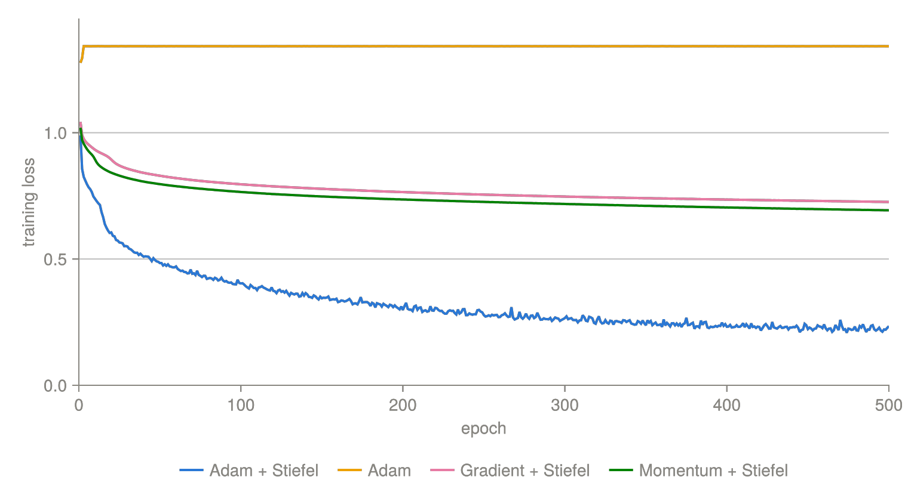

Optimization on Homogeneous Spaces
The manifold optimizers in this package implement [10]. This page summarizes that paper: what problem it solves, how it solves it, and which function in GeometricOptimizers corresponds to which operation in the algorithm.
The problem: Adam has no coordinate-free formulation
Standard optimizers such as gradient descent generalize to Riemannian manifolds without much trouble: they only need a gradient and a retraction, both of which are defined intrinsically. Adam does not. Adam assigns one learning rate per coordinate, because its second moment $\mathcal{B}^\mathtt{cache}_2$ is accumulated and divided entry by entry. On a manifold there is no intrinsic coordinate system, so "coordinate-wise update" is not a well-defined operation, and the cache cannot simply be carried from one tangent space $T_{Y^{(t)}}\mathcal{M}$ to the next.
Existing generalizations resolve this either by restricting to Lie groups — where the Lie algebra $\mathfrak{g}$ is a global tangent space and the cache can live there — or by keeping the cache in an ambient vector space and projecting back onto the manifold at every step, which either loses the vector-valued second moment or introduces a projection.
The idea: a global tangent space for homogeneous spaces
A homogeneous space is a manifold $\mathcal{M}$ on which a Lie group $G$ acts transitively. Fixing a distinct element $E \in \mathcal{M}$, every $Y \in \mathcal{M}$ is $Y = \Lambda{}E$ for some $\Lambda \in G$, and a section is a map $\lambda: \mathcal{M} \to G$ with $\lambda(Y)E = Y$. This is GlobalSection.
For the StiefelManifold $St(n, N) = \{Y \in \mathbb{R}^{N \times n} : Y^TY = \mathbb{I}_n\}$ the group is $G = SO(N)$, the distinct element is $E = [\mathbb{I}_n; \mathbb{O}]$, and the section is computed by completing $Y$ to an orthonormal basis with a $QR$ decomposition: $\lambda(Y) = [Y, Y_\perp]$.
The kernel of $\mathfrak{g} \to T_Y\mathcal{M}$ is the vertical component $\mathfrak{g}^{\mathrm{ver},Y}$; its orthogonal complement in $\mathfrak{g}$ is the horizontal component $\mathfrak{g}^{\mathrm{hor},Y} \simeq T_Y\mathcal{M}$. Evaluating this at the distinct element gives the global tangent space representation
\[\mathfrak{g}^\mathrm{hor} \equiv \mathfrak{g}^{\mathrm{hor},E},\]
which is the same space for every $Y$. For the Stiefel manifold it has the sparse form
\[\mathfrak{g}^\mathrm{hor} = \left\{ \begin{bmatrix} A & -B^T \\ B & \mathbb{O} \end{bmatrix} : A \in \mathbb{R}^{n \times n} \text{ skew-symmetric}, \ B \in \mathbb{R}^{(N-n) \times n} \text{ arbitrary} \right\},\]
which is what StiefelLieAlgHorMatrix stores — only $A$ and $B$, never the full $N \times N$ matrix. The analogue for the Grassmann manifold is GrassmannLieAlgHorMatrix.
This is the key point of the paper. The Adam cache is kept in $\mathfrak{g}^\mathrm{hor}$, a fixed vector space that does not depend on the current iterate. Coordinate-wise operations are meaningful there, so the Adam update can be written down unchanged. And because
\[\dim{}St(n, N) = \dim\mathfrak{g}^{\mathrm{hor},Y} = \dim\mathfrak{g}^\mathrm{hor} = n(N - n) + \tfrac{1}{2}n(n-1),\]
no dimensions are added anywhere and no projection is needed — unlike approaches that carry the cache in $\mathbb{R}^{N \times n} \times \mathfrak{so}(n)$.
The algorithm
One step, for weights $Y^{(t)}$, a cache, the Euclidean gradient $\nabla{}L$ from automatic differentiation, optimizer parameters $\Xi$ and a section $\Lambda^{(t)}$:
\[\begin{aligned} \Delta^{(t)} &\gets \mathtt{rgrad}(Y^{(t)}, \nabla{}L) && \text{Riemannian gradient, an element of } T_{Y^{(t)}}\mathcal{M} \\ \mathcal{B}^{(t)} &\gets \mathtt{global\_rep}(\Lambda^{(t)}, \Delta^{(t)}) && \text{lift it to } \mathfrak{g}^\mathrm{hor} \\ \mathtt{cache} &\gets \mathtt{update}(\mathtt{cache}, \mathcal{B}^{(t)}, t, \Xi) && \text{the ordinary optimizer update, in } \mathfrak{g}^\mathrm{hor} \\ W^{(t)} &\gets \mathtt{velocity}(\mathtt{cache}, \Xi) && \\ \Lambda^{(t+1)} &\gets \mathtt{update\_section}(\Lambda^{(t)}, W^{(t)}) = \Lambda^{(t)}\,\mathrm{retraction}(W^{(t)}) && \\ Y^{(t+1)} &\gets \Lambda^{(t+1)}E && \end{aligned}\]
Only the first, second and last two lines are new relative to a Euclidean optimizer; update and velocity — that is, the definition of Adam, momentum or plain gradient descent — are untouched.
The Riemannian gradient
Converts the Euclidean gradient into a Riemannian one, i.e. into an element of $T_Y\mathcal{M}$, via the metric:
\[\mathrm{Tr}\!\left((\nabla_YL)^TV\right) = g_Y(\mathtt{rgrad}(Y, \nabla_YL), V) \quad \forall V \in T_Y\mathcal{M}.\]
For the Stiefel manifold with the canonical metric $g_Y(V_1, V_2) = \mathrm{Tr}(V_1^T(\mathbb{I} - \tfrac{1}{2}YY^T)V_2)$ this is $\mathrm{grad}_YL = \nabla{}L - Y\nabla{}L^TY$. In the package: rgrad.
The lift to the global tangent space
Maps $T_Y\mathcal{M} \to \mathfrak{g}^\mathrm{hor}$. It is the composition of two isomorphisms — $\Omega: T_Y\mathcal{M} \to \mathfrak{g}^{\mathrm{hor},Y}$,
\[\Omega(V_Y) = \left(\mathbb{I} - \tfrac{1}{2}YY^T\right)V_YY^T - YV_Y^T\left(\mathbb{I} - \tfrac{1}{2}YY^T\right),\]
and the conjugation $Z \mapsto \Lambda^{-1}Z\Lambda$ that moves $\mathfrak{g}^{\mathrm{hor},Y}$ to $\mathfrak{g}^{\mathrm{hor},E}$. In practice the two are done at once: with $\Lambda = [Y, Y_\perp]$ the result is just $A = Y^T\Delta$ and $B = Y_\perp^T\Delta$. In the package: global_rep.
The extended retraction
A classical retraction maps $T_Y\mathcal{M} \to \mathcal{M}$. Here the argument lives in $\mathfrak{g}^\mathrm{hor}$ instead, so the paper defines an extended retraction $\overline{\mathrm{retraction}}: \mathfrak{g}^\mathrm{hor} \to \mathcal{M}$, characterized by $\overline{\mathrm{retraction}} \circ \Omega$ being a classical retraction. Computationally it splits into update_section (right-multiply the section by $\mathrm{retraction}(W^{(t)})$) and apply_section (right-multiply by $E$).
Two choices ship with the package: Geodesic, the closed-form geodesic of the Stiefel manifold, and Cayley, the Cayley transform. Both exploit the sparsity of $\mathfrak{g}^\mathrm{hor}$: a horizontal lift factors as $\bar{B} = B'(B'')^T$ into two $N\times{}2n$ matrices (lift_factors), so the only matrix function either of them evaluates is on a $2n\times{}2n$ argument.
For Geodesic that function is $\mathfrak{A}(X) = \sum_{n\geq1} X^{n-1}/n!$, and how it is evaluated is a choice in its own right — the argument $X$ has norm $\approx\|\bar{B}\|^2/4$, so summing the series directly loses everything to cancellation once the step is large. Geodesic therefore takes an AbstractExponentialAlgorithm; the default ScaledSquaring is accurate at every lift norm, and is the only one that runs on a GPU backend. The Retractions page has the theory of the two retractions and of the four algorithms, and the measurements that separate them.
Note that the section is not recomputed at every step. It is built once, when the optimizer is initialized (the $QR$ decomposition above), and thereafter parallel-transported along the optimization trajectory by update_section.
The Euclidean case falls out
If $\mathcal{M}$ is a vector space $\mathcal{V}$ then $\mathcal{M} \equiv T_Y\mathcal{M} \equiv \mathfrak{g}^\mathrm{hor} = \mathcal{V}$, the distinct element is $E = \mathbb{O}$, rgrad and global_rep are the identity, and the extended retraction is addition. The algorithm above collapses to textbook Adam. This is why the same Adam, MomentumMethod and GradientMethod in this package work on a plain Array and on a StiefelManifold without any change on the caller's side: the method supplies update and velocity, the parameter type supplies everything else.
The construction is not specific to Adam either. Any first-order method whose cache is a vector space element — RMSProp, AdaGrad, BFGS — generalizes the same way, and it applies to any homogeneous space, including the GrassmannManifold and the symplectic Stiefel and Grassmann manifolds.
The numerical experiment
The paper trains a vision transformer on MNIST and Fashion-MNIST: 16 transformer blocks, 7 attention heads, $49 \times 16$ inputs ($28 \times 28$ images cut into 16 patches of $7 \times 7$), batch size 2048, 500 epochs, Float32, no hyperparameter tuning. The projection matrices $W^Q_i, W^K_i, W^V_i$ of the multi-head attention layers are the weights that are put on $St(7, 49)$; the feedforward and classification weights stay unconstrained. Four configurations are compared:
| weights | optimizer | outcome |
|---|---|---|
| unconstrained | Adam | does not learn — loss stuck at $\approx 1.34$ |
| Stiefel | gradient descent | learns |
| Stiefel | momentum | learns, second best |
| Stiefel | Adam | learns, best |
Constraining the projections to the Stiefel manifold is what makes the network trainable at all. The unconstrained baseline suffers from vanishing gradients: with 16 blocks and none of the usual remedies — layer normalization, dropout, regularization, pre-training — the gradient that reaches the early blocks dies, the network collapses onto a trivial prediction $e_i$ and stays there. The plateau is exactly $\sqrt{\tfrac{9}{10} \cdot 2} \approx 1.34$, the $L_2$ distance between a one-hot guess and a one-hot target that disagree on 9 of 10 digits. An orthonormal $Y$ neither amplifies nor damps what passes through a block, which is what removes the problem.
Two conclusions follow. First, hard geometric constraints can replace the heuristics a transformer normally needs, and they do so without adding a hyperparameter — unlike a soft orthogonality penalty $\tilde{L} = L + \mu\Sigma$, which adds $\mu$ and guarantees nothing. Second, among the Stiefel optimizers, Adam gives speed-ups over gradient descent and momentum of the same order as it does in the vector space case, which is the point of generalizing it rather than settling for a first-order method.
Reproducing the experiment
The scripts in scripts/ of this repository run that experiment against GeometricOptimizers itself — mnist.jl on the CPU, mnist_cuda.jl on an NVIDIA GPU, mnist_metal.jl on Apple silicon. Everything below is one run of mnist_cuda.jl on an RTX 4090: the same four configurations, 500 epochs of 29 batches each at a batch size of 2048, Float32, the Cayley retraction — none of the scripts passes retraction, so they all take the default — 6 h 53 min for all four.
The three series the figures plot are checked in under docs/src/data/ — 540 rows in total, distilled from the run by scripts/distill_mnist_results.jl. The figures are therefore rebuilt with the documentation and need neither a GPU nor a rerun.
The training loss

The curves reproduce the MNIST panel of the paper's training-loss figure, and closely: the run ends at a loss of 0.234 for Adam on the Stiefel manifold, 0.693 for momentum, 0.726 for gradient descent and 1.342 for unconstrained Adam. The ordering Adam $<$ momentum $<$ gradient descent $<$ unconstrained is the paper's, and the plateau of the unconstrained baseline is the trivial prediction $\sqrt{1.8} \approx 1.342$ derived above — it is reached within three epochs and held for the remaining 497.
| weights | optimizer | loss, epoch 1 | loss, epoch 500 | test accuracy | $|Y^TY-\mathbb{I}|$ | time |
|---|---|---|---|---|---|---|
| Stiefel | Adam | 0.990 | 0.234 | 0.8658 | 8.6e-03 | 1:35:25 |
| unconstrained | Adam | 1.277 | 1.342 | 0.0980 | — | 1:30:30 |
| Stiefel | gradient | 1.043 | 0.726 | 0.6013 | 4.3e-04 | 1:47:35 |
| Stiefel | momentum | 1.020 | 0.693 | 0.6392 | 3.5e-04 | 1:54:33 |
The test accuracy

The paper reports the training loss only, so the accuracies are this repository's addition rather than a reproduction. They say what the loss curves imply: the unconstrained network sits at 0.098, the accuracy of always guessing the same digit, for all 500 epochs, while the three Stiefel runs separate in the same order as their losses. Adam is also the only one of the three that has converged — it reaches 0.86 by epoch 100 and then moves within $\pm 0.01$, whereas gradient descent and momentum are still climbing at epoch 500.
Drift off the manifold

A retraction maps onto the manifold by construction, so in infinite-precision real arithmetic $Y^TY = \mathbb{I}$ would hold after every one of the 14500 steps and this figure would be a flat line at zero. What it actually plots is the rounding error of a finite format — the experiment runs in Float32, as the paper's does — accumulated over those steps.
Two things are worth noting. The growth is linear in the step count rather than a random walk: between epoch 25 and epoch 500 the three curves grow by factors of 19.6, 19.6 and 16.7 while the step count grows by 20, which is an exponent of 0.99, 0.99 and 0.94 against the slope-one guide. So the departure is a systematic accumulation and not noise, and it is set by the number of steps rather than by anything in the geometry. A random walk would give an exponent near 0.5 and, at epoch 500, a drift an order of magnitude smaller. And Adam departs about twenty times faster than gradient descent or momentum, which is what its normalized update $\hat{m}/(\sqrt{\hat{v}} + \varepsilon)$ predicts: its steps are far larger than a raw gradient's, and the error a retraction leaves behind grows with the size of the step it is given.
In absolute terms none of this matters at this length. After 500 epochs Adam is at $8.6\cdot10^{-3}$, which is still orthonormal to two digits, and the other two are two orders of magnitude below that. It is worth knowing rather than worth fixing: linearity means the drift is predictable, so a run several times longer, or one that needs more than two digits, would want the section rebuilt at intervals — a cost that scales with the number of steps and not with the size of the network. Moving to Float64 would push the whole figure down by roughly the ratio of the two epsilons and change nothing about its shape.
Reference
- [10]
- B. Brantner. Generalizing Adam To Manifolds For Efficiently Training Transformers, arXiv preprint arXiv:2305.16901 (2023).